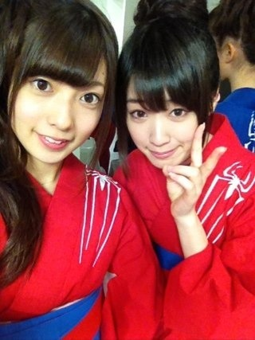
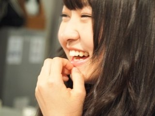
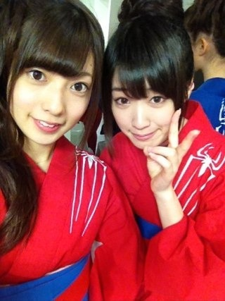
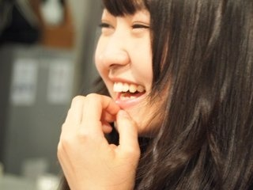

2012/0616Sat（´-`）.｡oO(かずみん×72
こんばんは(^^)
いつも沢山の応援ありがとう
ございます！
今日は幕張メッセで
個別握手会でした♪
たくさんの方が来てくださって、
本当に嬉しかった(#^.^#)
楽しかったです！
元気をくれてありがとう。
今日来てくださった皆さん、
本当にありがとうございました！
-----------
この前はアメイジング・スパイダーマンの
PRをさせていただきました！
私自身、スパイダーマンを観るのは
初めてだったのですが、
アメイジング・スパイダーマン...
...観た瞬間ガジハマりしました！
最高です！！
公開したらぜひ観てみて下さい(#^.^#)

ゆったんとスパイダー浴衣で撮りました^^
------------
はい！
今日の一枚は予告通り

可愛いっ\(//∇//)\
万理華推しの方が必見ですよ！
あ、でも高山推しの方は
推し変しないで下さいね♪笑
-----------
今日もお疲れ様でした(^^)
ブログ短くてごめんなさい(>_<)
おやすみなさい...★
いつも沢山の応援ありがとう
ございます！
今日は幕張メッセで
個別握手会でした♪
たくさんの方が来てくださって、
本当に嬉しかった(#^.^#)
楽しかったです！
元気をくれてありがとう。
今日来てくださった皆さん、
本当にありがとうございました！
-----------
この前はアメイジング・スパイダーマンの
PRをさせていただきました！
私自身、スパイダーマンを観るのは
初めてだったのですが、
アメイジング・スパイダーマン...
...観た瞬間ガジハマりしました！
最高です！！
公開したらぜひ観てみて下さい(#^.^#)

ゆったんとスパイダー浴衣で撮りました^^
------------
はい！
今日の一枚は予告通り

可愛いっ\(//∇//)\
万理華推しの方が必見ですよ！
あ、でも高山推しの方は
推し変しないで下さいね♪笑
-----------
今日もお疲れ様でした(^^)
ブログ短くてごめんなさい(>_<)
おやすみなさい...★
2012/06/16 21:42


コメント(383)
バーン！
俺は白石からひなちまに推し変しちゃったけど、
ゆう君はほんとにかずみんの事好きやからねw
コメント9回目
( ´艸｀)
スパイダーマンみてない(泣)
あしたは選抜メンバー発表やねー
ドキドキやー(´;ω;｀)ぶわっ
かずみんはいってるよね♪
あしたの乃木どこで
チェックするからねー
今横浜に住んでて３月まで青森に住んでたあいつです(笑)
別に覚えてなくてもいいけどね(^-^)
俺もめちゃくちゃ楽しかった!!
かずみん一番応援してます!!
こんばんは(・∀・)
かずみんには初コメだけど、まりかの写真ありがとうヽ(*´∀｀)ノ
やばいね。
まりか推しなので思わずお礼を書き込んでしまった(笑)
次はななみんもお願いします
あ、できれば、まりかとななみんの2shotで＾＾b
贅沢や～～(笑)
初レッドカーペットはどんな感じでしたか?
これは、まりっか推しに心変わりしそうな可愛さ…。
おつかれさまーーー！
お団子かずみんやっぱ可愛いすぎるー！♪♪
もおおおおスキ！！！
今日全然行けなかったからさみしい(*_*)
しかも次7月の全握だよ、遠いよー！！
全握は全力でかずみんの
とこいくからねヽ(*＾ω＾*)ﾉ♪
そして、べびたん可愛すぎ///
か、かずみんも可愛いよ////////
ヒールで頑張ってたね(/ _ ; )
だから今日はゆっくり休んでね！
お疲れ様！
まいころ～♡
かずみん こんばんは( ´ ▽ ` )ﾉ
握手会お疲れ様！
アメイジング生放送見たよ～♪
かずみん の浴衣姿キレイやった\(//∇//)\
写真待ってたぜぇ！！
やっぱ かずみん の撮った写真はええね♪( ´θ｀)ノ
いつも忙しい中更新ありがとね～
次回の更新も楽しみにしとくね♪
言えなかったけど、ほんとあしゅに推し変してごめん！
ちゃんと推すから許して（笑）
今日はお疲れさま(´∀`)ノ
幕張でメシ食って、今帰宅中だよ♪
例の物ようやく渡せて良かった( ´艸｀)
約束果たせて安心した←
明日の収録も頑張ってね♪
(=゜ω゜)ノジャ、マタ!!
かずみんの笑顔にまた元気もらっちゃいました。
いつもながら券の枚数の少なさに反省(;_;)サードの個別ではもっと券とるからね(>_<)
その前に東京と大阪で全握があるね！今度はライブが楽しみだぁ(^o^)
そしていよいよ明日は選抜発表！
メンバーの比じゃないけど、いつも緊張するよー。
寝れないよー！
元気をもらってるのは、こっちの方です！
握手会でのファンに対する優しさは、ホントにいつも嬉しいんです(^_^)b
ありがとうございます！
これから厳しい季節になってきますが、体に気をつけて頑張ってくださいヽ(^0^)ﾉ
|∀゜)＜かずみーん
|∀゜)＜さのぞうだべ
|∀゜)＜個別おつでした！
|∀゜)＜今日もよかったよー
|∀゜)＜お団子もサイコー！
|∀゜)＜ノースリーブもサイコー！
|∀゜)＜ショーパンもサイコー！
|∀゜)＜これからも高山しか！！
|∀゜)＜ありがとーねー
|∀゜)ノシ
ベビたん推しです(･ω･)♪
いただきます♡///(笑)
最後までお疲れ様でした(((o(*ﾟ▽ﾟ*)o)))
今度は7月の札幌で空いちゃあけどまた会いに行きます！
ゆっくり休んでね。
今日４部でよみうりランドぶりに握手しに行ったおっちゃんです(^^ゞ
まりかちゃんの写真はまたプロがなんかの合間に自然に撮ったみたいですごい(^O^)
あっ！ もちろんかずみんとゆったんのツーショットもかわいいけど(^^)
行きたいけど遠いから…
スパイダーマン､ガジハマリましたか(笑)
万理華ちゃん綺麗に撮れてます！
プロのカメラマンになれますよ！(笑)
アイドルやってるから無理か(笑)
とりあえず､かずみんのこと大好きです！
ありがとうございまーす！めっちゃ楽しかった(o^^o)
ピアノの話とかお昼ご飯とか髪型の話しました（笑）
またぜったい行くんでよろしくね＼(^o^)／
おやすみなさい♪
今日はお疲れ～！＼(^^ )
僕はいくちゃんの5部の鍵開けをしましたぁ！
かずみんレーン隣だったから、かずみん見てたら、かずみんもこっち見て笑ってくれて少し照れちゃった（笑）もう中3なのに(>.<)
う～かずみんの笑顔には負けてしまう！
だから次の東京の握手会ではかずみんにも握手しにいくね！
今日からあきらからあきらちゃんに名前変えました。
こっちんが分かりやすいよね。
握手会お疲れ様。
今日も楽しかったよ！
やっぱ一実さんとこが一番落ち着くわー。
俺、一実さん推しやで。
ほんとに。
疑うなよ!?
毎週一実さんに会っとったのに、今度は3週間も会えんって…。
今日会ったばっかなのに、もう会いたくなってきた(笑)。
乃木どこで我慢するか…。
明日の乃木どこ、どんな結果になっても、ずっと応援しとうけん、頑張ってね。
かずみんばんわ(*^o^*)
アメスパに握手会お疲れ様！
アメスパ楽しかったよ～
大学あったからちょいちょいだけど
握手会も久々かな？
今日も楽しめただろうね！
全握でみんなに会えるの
楽しみにしてるわ＼(^o^)／
今日はゆっくり休んでね？
でわでわこの辺で@(・●・)@
まりか推しやからお礼言うわwまた可愛いまりかを頼むわな←
握手会お疲れ様～♪
行けんかったのが残念や…
東京・大阪全握はどっちも行くからガッシュトークしよう！
スパイダーマンの番組ずっと見てたで
私服も可愛かったしガッシュの文庫本も読んでんやね
でも財布にお札１枚は吹いたww
浴衣にお団子頭も最高やった
映画公開されたら見に行ってガジハマりしてくんな～
ほなねﾉｼ
今度いつあるかわからんけど駆けつけます！
スパイダーマンも観に行くぜ！
スパイダーマンの浴衣良いね！
明日も頑張るぜ。
お疲れのところ更新していただき
ありがとうございました！！！
ゆっくり休んでくださいね～！！
ブログ短くても嬉しいですよ！
今日も１日お疲れさま♪
東京の遠征は初めてやったけどやっぱり来てよかった(^-^)v
一実と１日いっぱい話したりできてすごい楽しかったよ(^∇^)
次は全握でお会いしましょう♪
スパイダーマン見に行くな!!
ガチじゃなくてガジなんやな(笑)
万里華可愛いけどやっぱり一実やなo(^o^)o
体調には気をつけて!!
おやすみ♪
41回くらいのコメント☆★
鍵閉めできてよかった。
泣いちゃってごめんね。
かずみんのせいでじゃないからね?!
北海道までにまだ東京全握あるから、また会いにいくからね(*^^*)
待っててね♪♪
ごめん、体調悪すぎるから、今日は短めなコメントで許して(´；ω；`)
おやすみ☆★
大事な事、忘れてない(┳◇┳)
今日の私服の写メは……………残念(┳◇┳)
Baiponε=ε=┏( ・_・)┛タカポン
握手会お疲れさまでした*^-^)/
かずみんに初めましてができて満足(*^-^*)
笑顔をありがとうございました！
あんまり行けなくてごめんね(汗
東京全握でまた行くから(^з^)-☆
じゃあまたコメントするねー☆
今日は握手会で話せて元気もらえたし楽しかったわ♪
ガッシュの話できたしww
やっぱキッドがイイね!!
個別お疲れ～！！
めっちゃ行きたかったよ～(>_.<)y-~！！
Gyaoずっと見てたよ～＼(^o^)／
かずみんの「アメイジング～」ガジハマったよ～！！
かずみんの、ガジ～って、なんなの(笑？？(￣▽￣;)
スパイダーマン見たくなったよ！！
かずみんの浴衣めっちゃ似合ってる～！！
本当、めっちゃかわいい～！！！
まりたんの写真かわいいね(^o^)v
さすが乃木坂一のベビーフェイス！！
かわいいけど、推しはかずみだぜぜぜぜぜ～い！！(笑)
ではでは、かずみん仕事も頑張ってね～q(^-^q)
めっちゃ応援してるよ！！
アメイジング～(^o^ゞ
今日は握手会お疲れ様ー
かずみんの所
本当はね
行きたいん
お金
だから
絶対
待っててくれますか
では今日はゆっくり
明日も
たーちゃんより
p.sべびたんの
ふーやです！
今日の個別緊張したー！(>_<)
握手に行くのに何を話そうか十何分か考えて行ったんだけど、かずみんに会うと全然思いつかなくてパニック状態に・・・
でも初めての個別は楽しめて良かったぜ！！
あと、今日の写真はスパイダーマンだね！
俺も見たことはあまりないんだけど、見てみたいんだよね。
それじゃあ、ばいばーい！
こちらこそいつも元気をありがとう。
早速ブログもアップしてくれてありがとう。
これからはちゃんと全部にコメントします
かずみん浴衣姿似合いますね
いつかまじかで見てみたい
握手会お疲れ様でした(*^^*)
今回の個別いけなかったのでぜひ次は行くので
かずみんパワー下さいねヾ(＠⌒ー⌒＠)ノ笑
アメスパの放送少し見たよ！
浴衣にお団子かわいーね☆彡
すごい似合ってるよ(o^^o)
万里華きてあああああ♪( ´▽｀)
万里華の笑顔は最強です～んーやばい
推し変してくry
嘘です…かずみん推しますよ♪
短くても更新あると嬉しいよ♪
ゆっくり休んでね＼(^o^)／では
かずみんに会えるだけで元気もらえるよ(>∀<●)ﾉ
お話しは上手くできないけど、それだけで幸せ♪
スパイダーマン企画、お疲れさま！
公開されたら観に行くね。
まりか可愛い…けどかずみんのがもーっと可愛い(*´I`*)
推し変しないよ♪
ブログ、これくらいの長さで十分だよ。
無理はしないでね
おやすみー。。。
一実さん
今日の握手会、大変お疲れさまでした。
楽しい時間を、過ごせましたか？
今日は、１部に参加しました。
しかも、１番でしたね。
覚えていますか？
自分でも、びっくりしました。
一実が、スタンバイする時、手を振りながら
「おはよう」と挨拶もできました。
少し、得した気分です。
コメント名を言ったとき、気がついてくれて
ありがとう。
そして、元気だったので、安心しました。
いつもコメントの末文で綴っている、想いを
直接伝えることができ、嬉しく思います。
帰りに、手紙を預けてきましたので、もしよかったら
読んでみてください。
プレゼントは、次の全握まで、お楽しみに・・・。
これからも、わたしなりの応援スタイルで
一実を一途に支えていきますね。
最後に一句・・・。
『つかの間の あなたの陽射しに 心ときめく』・・・感激！
本当に、一実は太陽ですね。
いつまでも、暖かい陽射しで、わたしたちを包んでください。
一実を一途に想い、支え続ける、えりひかダディより
すぎょいですね～～。にしてもそっきゃーこの色合いって作品に掛けてるですな
(^_^;))))))コソコソ…(^_^)/可愛い感じでやんすね～ゆったんとお笑い班ショット的な～
(*^.^*)(=°ω°=）よか日だったんでやんすね～～
肘さわってさわがして
ごめんね
今度握手会のとき
ちゃんと謝るね
あとガッシュのことも
はなしたいし
今日のお団子の髪型
可愛かったよ
(｀・ω・´)
個別楽しかったなら
よかった(≧∀≦)
テスト期間中でなかなか手紙書き出さんけど絶対書くけん待っとって！
んでね、
スパイダーマンだけど
オレもみたことないけん
公開したら見に行くね&iF9AD;(出来れば一実ちゃんと行きたい…照)
一実ちゃんの浴衣が
可愛すぎたけんね…
あっ！でもべびたんに
推し変するかもよ！笑
だけん、次は一実ちゃんのアップ載せてね(*^^*)
ーーーーーーーーーーーそれと3thシングルの
選抜発表が今度の日曜に放送されるね(´・ω・｀)一実ちゃんはもぅ知ってるんだろうけどやっぱり心配だよ(。・_・。)ノ
結果どうでもずっと
応援するのは変わらんけん(=゜ω゜)ノ！
なら、またコメントするけん(´・ω・｀)
よろしくね！
かずみんより年下～～
一個したかなぁ？
今度は大阪来て～～～
待ってるで！！
かずみんの影響もあって
最近カメラにガジハマってます(゜-゜)
かずみんわぁ～～
乃木どこ？の時より
普段のメンバーとかと喋ってる方が
好きやわぁ～～
どんなかずみんでも好きやけどなっ！！
次の更新まってまぁす
個握お疲れさま^^
アメイジングスパイダーマンのイベントもお疲れさま^^
浴衣姿も可愛いね^^
かずみんはいつでも
ガジ可愛いからね^^
万里華ちゃんも可愛いからそろそろ推し変かな？(笑)
なんてね！
かずみん推しが変わる訳
ないでしょ？
『ずっとずっとずうっと、かずみん推しは変わらない！』
ってくらい
貴方のことが大好きです^^
明日はいよいよ3rdの選抜
TV発表ですね。
25時間後が楽しみなイベリコ牛でした^^
おやすみん かずみん
＼(^o^)／
コメントする